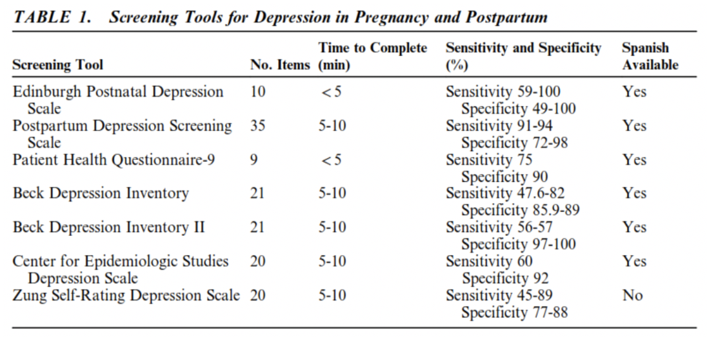

Postpartum depression is a depressive disorder that lasts for at least two weeks postpartum and creates a significant impairment in functioning (Andrina 2021). With postpartum depression, there is an onset of symptoms anywhere between time during pregnancy and within the first year postpartum. Fifteen percent of mothers suffer from postpartum depression in the postpartum period and has been seen in a variety of cultural contexts, which can indicate that it is not just a Western phenomenon (Gunst 2021). PPD has negative impacts on cognitive function and parental behavior, which can lead to negatively affecting the interactions between mother and child and the development of the infant. If the mother has severe enough PPD, it could negatively affect her ability to care for her child or even lead a mother to actively harm herself or her infant, which would severely decrease the fitness of herself or her infant (Gunst 2021).
One thing that I found interesting when conducting this research was that postpartum depression does not only occur in women. Men can also suffer from postpartum depression. Research conducted by Sherri Melrose (2010) in Paternal postpartum depression: How can nurses begin to help? goes into more detail on the topic. It talks about paternal behaviors that indicate depression, tools used to measure paternal PPD, and the effects of paternal PPD on families.
The symptoms of postpartum depression are variable, with changes in hormonal levels following delivery influencing the symptoms that arise (Kettunen 2019). While major depression disorder is useful in diagnosing postpartum depression, PPD is not quite the same as MDD simply due to the prominence of some neurotic symptoms. Neurotic symptoms seen in PPD patients can include things like “anxiety, phobias, irritability, somatic symptoms and fatigue” (Kettunen 2019). Kettunen referenced another article that mentioned insomnia, difficulties staying awake, or difficulties falling asleep as another symptom of PPD. It was more common to see women suffering from PPD have reported experiencing aggressive thoughts rather than women with major depression outside of the postpartum period (Kettunen 2019). There may be benefit towards the care of the infant in some degree of the neurotic symptoms, but if the mother has a maladaptive form of postpartum depression, it could be destructive to mother and infant health. Kettunen (2019) mentions that anxiety symptoms are common in postpartum, while psychomotor symptoms like restlessness/agitation and impaired concentration were seen as being prominent in women with major PPD. Women with major depression outside of postpartum reported a sad mood, suicidal ideation, and diminished interest more so than the psychomotor symptoms seen in women with major PPD (Kettunen 2019).
There have been several studies that suggest postpartum depression might be partly due to genetic predisposition. Genes that are linked to major depression have been looked at in the context of postpartum depression as well and “findings point to the possible effects of polymorphic variations in genes within the monoaminergic system, but also within the estrogen receptor, the oxytocin peptide, the glucocorticoid receptor and the corticotrophin releasing hormone receptor I genes” (Kettunen 2019). This leads researchers to believe that a genetic predisposition could be a risk factor regarding postpartum depression, but more research would need to be done to confirm these findings.
Estradiol, progesterone, and cortisol rise during pregnancy but after delivery, those hormones decrease dramatically while prolactin and oxytocin increase (Kettunen 2019). Even though all women experience fluctuating hormones during pregnancy and after delivery, only few women develop postpartum depression. Hormone withdrawal theories suggest that the withdrawal of estrogen and progesterone in women are proximate causes of depression in vulnerable women (Kettunen 2019). The vulnerability to depression is said to have come from some fluctuations in ovarian hormone levels contributed the interaction between the HPG-axis and HPA-axis according to research done by Kettunen (2019).
Stress hormones are like reproductive hormones in the sense that they both increase over the course of the pregnancy and after delivery both drop. The rise in estradiol levels of serum during pregnancy might stimulate the HPA-axis but after delivery, the estradiol levels of serum decrease along with a decrease in concentration of CRH (Kettunen 2019). Kettunen (2019) found research that has proved that women suffering from postpartum depression has more suppression of the HPS-axis than emotionally stable mothers. Other researchers studied by Kettunen (2019) believe that stress reactivity may be more important than baseline hormone levels regarding the pathophysiology leading to PPD. In addition to stress reactivity, higher CRH levels in mid-to-late pregnancy could be predictive of postpartum depression symptoms during the first couple of months after delivery (Kettunen 2019).
Abnormal thyroid function is seen in 3-4% of the general population, while it is seen in up to 7% of women six months following delivery. Kettunen (2019) found research that mentioned pregnancy-related changes in the thyroid having an impact on the serotonin system. There is still debate on if biomarkers suggest links between thyroid antibodies, TSH, T3 or T4 levels with postpartum depression symptoms (Kettunen 2019). However, more research needs to be conducted to have a firm answer.
Stressful life events or even history of depression can leave women more vulnerable to PPD and a result of this vulnerability might end up being a more rapid inflammatory response (Kettunen 2019). There have been inconsistent results in studies conducted but most have provided evidence to suggest an exaggerated proinflammatory response in women with PPD symptoms (Kettunen 2019).
Kettunen (2019) found that a precursor to PPD is parental caregiving during a mother’s own childhood. They saw that poor parental care and emotional support during childhood has been regularly associated with PPD symptoms, however, recall bias might need to be considered. Adverse family relationship experiences could have influenced the mother in a way that left her more vulnerable to PPD. Many mothers that committed infanticide experienced trauma in their childhood or even adulthood. These mothers also thought of their parents to be demanding and emotionally unsupportive as well (Kettunen 2019).
Lack of social or partner support is another risk factor for postpartum depression. Social support for women during postpartum aids in reducing the risk for depression and active treatments might not be as necessary if they have the proper social support (Andrina 2021). However, there are limited number of studies on the effects of antidepressant medication and other forms of treatment to be truly confident in that. Early attachment determines adult attachment style, and an insecure attachment style can be indicative of PPD. Insecure attachment, poor support from a significant other, and PPD have been linked together (Kettunen 2019). Kettunen (2019) observed in another study that women with a less secure attachment and a greater dissatisfaction in their partner support were seen to have higher levels of postpartum depression.
Significant associations between PPD and abuse were found in studies using developed countries, but domestic violence is still a large risk factor for PPD in developing countries as well. Kuttunen (2019) also noted that substance use and current or past experiences of abuse were linked to an increased risk for PPD. These experiences of violence can predispose the victim to more violence down the line.
Kuttunen (2019) refers to the meta-analyses conducted by O’Hara, Swain, and Beck that low socioeconomic status is unconvincingly related to postpartum depression. More specifically, family income and the occupation of the mother are weak predictors of PPD. However, Kuttunen (2019) noted that other studies have found low education, low income, and unemployment are linked to postpartum depression.
There are several screening tools available to diagnose postpartum depression. One popular screening test available and widely used in English and Spanish speaking countries is the EPDS. Screening tests are typically inexpensive and easy to administer causing minimal discomfort to patients (Andrina 2021). Screening tests like EPDS are questionnaires with around ten to thirty questions and can typically be completed in anywhere from five to ten minutes. There is also usually a threshold score the patient must get to be considered clinically depressed. Another screening test, the PDSS, is specifically for postpartum depression screening and covers seven domains: “sleeping/eating disturbances, anxiety/insecurity, emotional lability, mental confusion, loss of self, guilt/shame, and suicidal thoughts” (Andrina 2021). In screening tests for postpartum depression, the threshold score that a patient receives can determine the severity of the postpartum depression. However, false positives are common among tests like these. The table pictured is from a literature review conducted by Hana Andrina (2021) and it shows the different screening tools used to diagnose both postpartum depression and depression in pregnancy. This table demonstrates the sensitivity and specificity of each test along with time to complete, number of questions, and if it is available in Spanish.
One possible treatment for PPD is Interpersonal psychotherapy, which is a short-term treatment for major depressive disorder that aims to address various interpersonal issues (Pearlstein 2009). IPT is important to the needs of women during the postpartum period. Pearlstein (2009) suggested that IPT, cognitive-behavior therapy (CBT) as well at psychodynamic therapy might be effective treatment in terms of psychological treatments for PPD. Pearlstein (2019) mentions that couples therapy is one that has not had much research about the effect on women with PPD. If there is a mild case of postpartum, counseling from nonmental health professionals might be a better option seeing as IPT and CBT are more helpful for women with severe PPD (Pearlstein 2009).
Women may not want to use psychotherapy due to their perceived negative stigma regarding it. There also might be a lack of trained therapists available to administer this psychotherapy treatment, which would make it harder for women to access this method of treatment (Pearlstein 2009).
Antidepressant medication is another way to treat postpartum depression. In a study conducted in women with PPD, there was one placebo controlled RCT that compared paroxetine with a placebo and while both groups improved significantly, the paroxetine group was superior in terms of remission of depression (Pearlstein 2009). According to the results of the study Pearlstein (2009) mentioned, remission rates for the paroxetine group was 37% and remission rates for the placebo group was 15%. In another study examined by Pearlstein (2009), paroxetine was compared against combined paroxetine/CBT in women with PPD and comorbid anxiety disorders. Both treatments were found to have significant improvements when measuring depression. Although half of the mothers were breastfeeding, no antidepressant side effects or serum levels in the infants were reported (Pearlstein 2009).
If a breastfeeding woman with PPD decides to choose antidepressant medication as treatment for her postpartum depression, she must weigh the potential risks of choosing this method. There is the risk of exposing the baby to the medication through breastfeeding as well as the risk of the baby’s development by not treating the mother’s postpartum depression (Pearlstein 2009).
Survival, growth and development, and reproduction were problems that our ancestors would have needed to solve for them to successfully pass on their genetic material. While time, energy, and resources are finite, organisms needed to determine costs and benefits to allocating their investment between somatic and reproductive efforts. According to Tracy (2005) reproductive efforts are broken down further into parenting efforts and mating efforts, where the organism would need to calculate the distribution of energy, time, and resources in a way that is fitness enhancing (Tracy 2005). This means that the parent would have to “size up” their current situation / environment and need to make a fitness-enhancing decision whether to invest in themselves, their offspring, or their mating opportunities (Tracy 2005). As a result of this hypothesis, Tracy (2005) concludes that the investment in offspring is not automatic seeing as there are situations where investing in offspring would cost more than simply investing somewhere else.
In terms of depression, this hypothesis states that depression is selected as a response to repeatedly occurring social circumstances (Tavares 2021). Bargaining strategies evolved in humans due to selective pressures from dangerous social situations. Tavares (2021) sees this theory as depression being a bargaining function used to entice group members to assist the depressed, the same might be seen for postpartum depression. Specifically, the Social Bargaining Hypothesis might be used by mothers that have a lack of social support or even paternal support. The postpartum depression would be used in an effort to gain more partner or social investment in the child (Taraves 2021).
The mismatch hypothesis for postpartum depression draws on “evolutionary-mismatch frameworks for understanding diseases of modern civilization” (Hahn-Holbrook 2014). When looking at dietary mismatches that contribute to postpartum depression, hunter-gather diets typically consisted of wild meats, starchy tubers, and seasonal fruits and vegetables. The ancestral diet was richer in micronutrients, fiber, and fatty acids when compared to a modern Western diet (Hahn-Holbrook 2014). It can be concluded that many modern populations are overfed and undernourished because they replace the micronutrient-dense foods with grains (Hahn-Holbrook 2014). Hahn-Holbrook (2014) also discusses that although little research has been done on the topic, a mismatch of breast-feeding rates and time might have an impact on postpartum depression. From the data provided in several studies that Hahn-Holbrook (2014) examined, it could not be concluded that breast-feeding provides mental health benefits. Less mothers are breast-feeding for shorter amounts of time when compared to ancestors and breast-feeding is known to have stress-regulation benefits (Hahn-Holbrook 2014). This breast-feeding mismatch for postpartum depression is hypothesized by Hahn-Holbrook (2014) to partly be a consequence of mothers not using the stress-regulation benefits that breast-feeding provides. Childcare mismatches are shown to exist because hunter-gather families used to live in kin groups where they would be surrounded by large amounts of family to help with the children, whereas modern humans often live far enough from close kin that they are on their own (Hahn-Holbrook 2014). Western families are also more likely to have fewer kids closer in age where it makes it difficult to have an older sibling help with the younger children. Weak social support has consistently been seen as a predictor of postpartum depression, so it would be a reasonable assumption that the shift from “multigenerational families to smaller nuclear families might impact women’s ability to cope with the demands of motherhood” (Hahn-Holbrook 2014).
Postpartum depression is a topic that is under-studied in my opinion. There are still quite a few questions left unanswered and arguably out-of-date articles on the topic with only a few current articles that were able to answer my questions. After studying and reviewing the hypotheses provided, I feel as though the Mismatch Hypothesis would be the most convincing. The Social Bargaining hypothesis, while very intriguing, does not answer all my questions through the data I have found. Although Tavares (2021) does mention the studies that Hagen and Silva conducted, it does not seem like the benefits of postpartum depression (gaining paternal or social support) would outweigh the costs, especially since receiving that support would not be a “cure-all” for the postpartum depression. The PPD would not disappear once the support is there; it would still be something that would take time to disappear. The Parental Investment Hypothesis makes a slightly more convincing argument than the Social Bargaining. If the investment in the offspring is not worth it, it would make sense for the body to warn the mother. However, where this does not make sense is because the hypothesis makes it seem like the organism could only chose to invest in one option (themselves, the offspring, or mating), not all three. The Mismatch Hypothesis demonstrates the differences between ancestors and modern humans, provided various ways to look at how the mismatch could have promoted postpartum depression. The only argument I would have against this hypothesis is that it might allude to saying that ancestral humans did not suffer from postpartum depression, or it was not as prevalent, when there is not much research to back that claim up. Other than that, I think it does a good job explaining why postpartum depression might occur in modern humans.